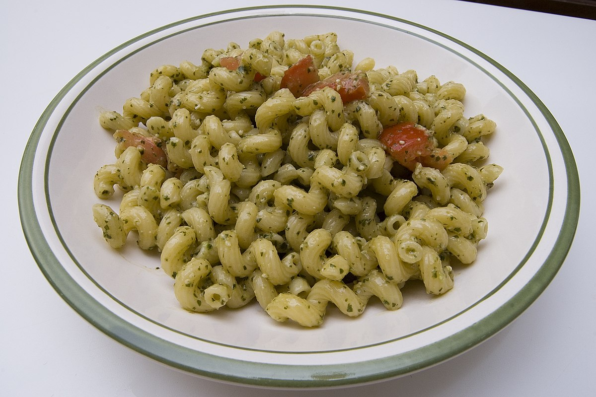

Recipe of the Month: Pesto Pasta
Ingredients
- 8 ounces pasta (e.g., spaghetti, linguine)
- 2 cups fresh basil leaves, packed
- 1/2 cup grated Parmesan cheese
- 1/2 cup pine nuts
- 3 cloves garlic
- 1/2 cup extra-virgin olive oil
- 1/2 teaspoon salt
- 1/4 teaspoon black pepper
Instructions
- Cook the pasta according to the package instructions until al dente. Drain and set aside.
- In a food processor, combine the basil, Parmesan cheese, pine nuts, and garlic. Pulse until coarsely chopped.
- With the food processor running, slowly pour in the olive oil. Continue blending until the mixture becomes smooth and well combined.
- Season the pesto with salt and black pepper, adjusting to taste.
- In a large mixing bowl, toss the cooked pasta with the pesto until evenly coated.
- Serve the pesto pasta warm or at room temperature. Garnish with additional Parmesan cheese and fresh basil leaves, if desired.